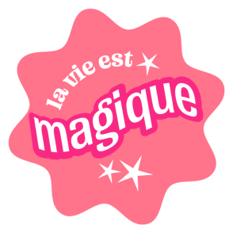
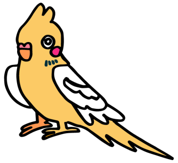
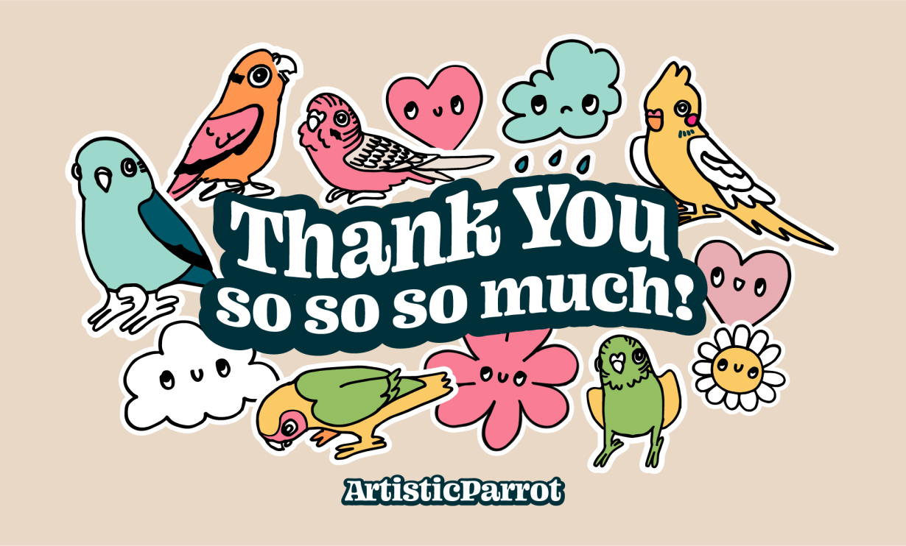
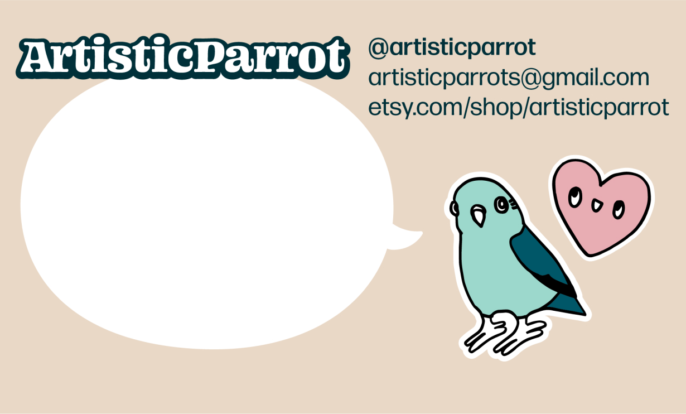
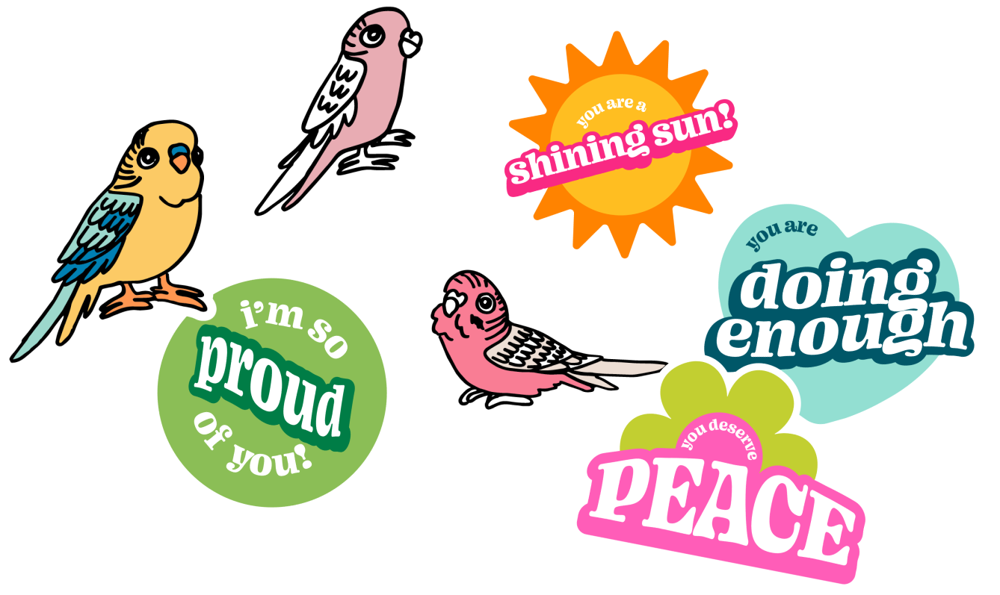
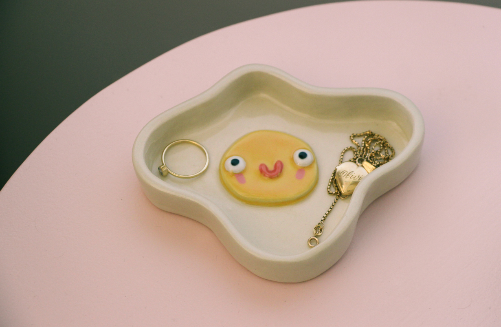
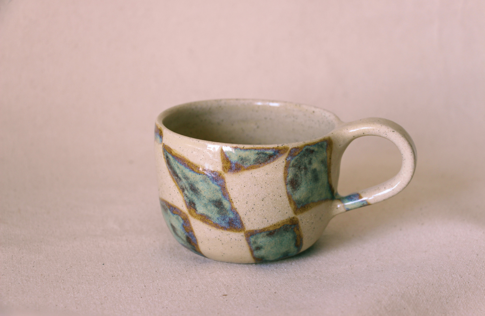
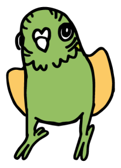

I designed a logo and logotype as well as supplementary illustrations and a tagline that connect to the imagery and theme of my ceramic work. This was applied to thank you cards and stickers to be included with purchases using a consistent colour palette and type relationships. The art direction strategy also extended to styling and treatment of product images.
My ceramic work is mainly of personified everyday objects and occurrences, bringing life to the mundane. I decided to include the tagline ‘pottery that’s alive’ to convey that my work is intended to act as characters in my customers’ lives.
I included simple doodles of birds and characters on assets, focusing on the fun, handmade, and childish angle of my work, and illustrating the world customers are entering when supporting my brand. To create a positive and playful brand image, I used the motif of stickers with these graphics. To create continuity between web and print, I use the sticker motif in web applications and include them with each purchase. Colours and type were chosen to pair the hand-drawn and soft intention of the drawings.
The sticker-like graphics are easily reconfigured to facilitate the creation of a unified identity across platforms. This includes a logo and logotype, print assets like business cards, thank you cards, stickers, and postcards as well as web assets like banners and social media graphics. I did visual research of several Etsy shops to see what information and tone were typical, and to investigate how other shop owners stage images to best exemplify their products.





